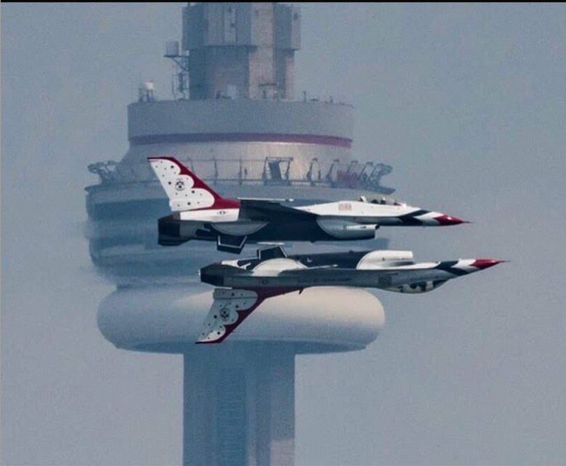
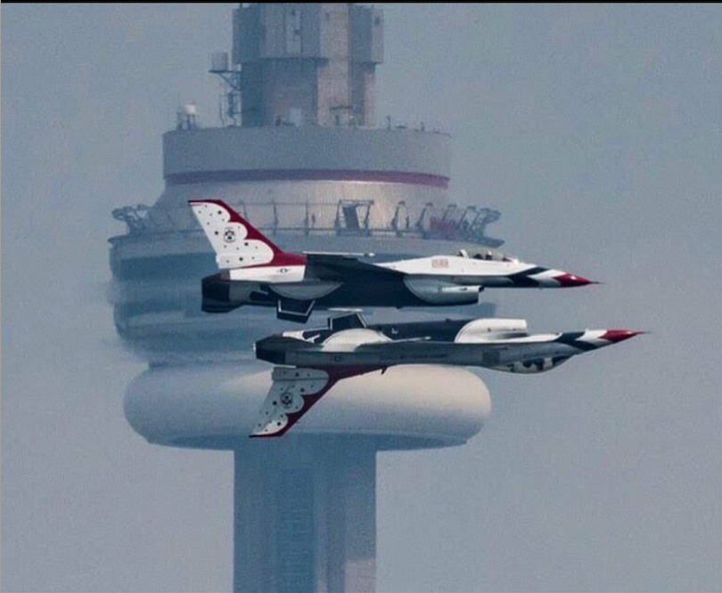
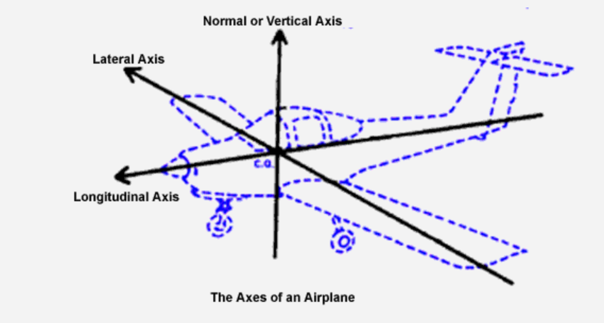
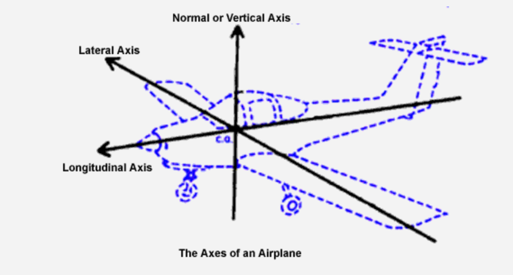
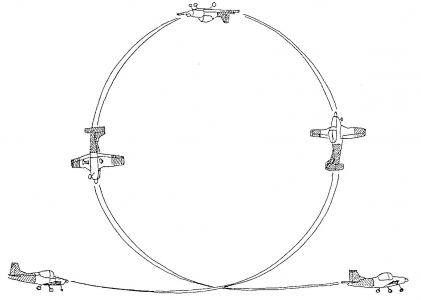
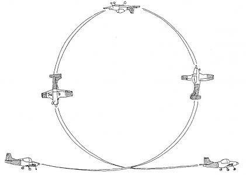
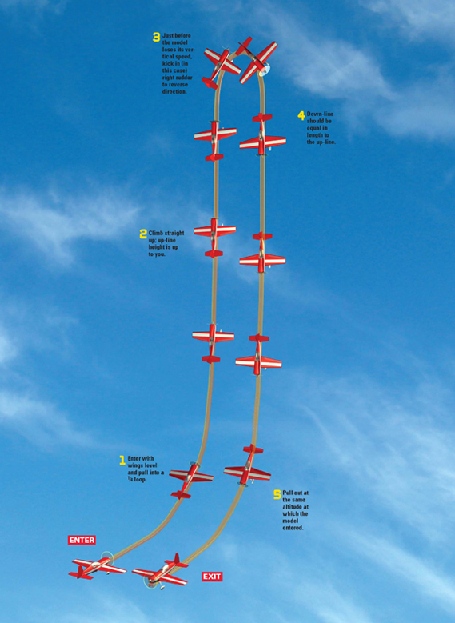
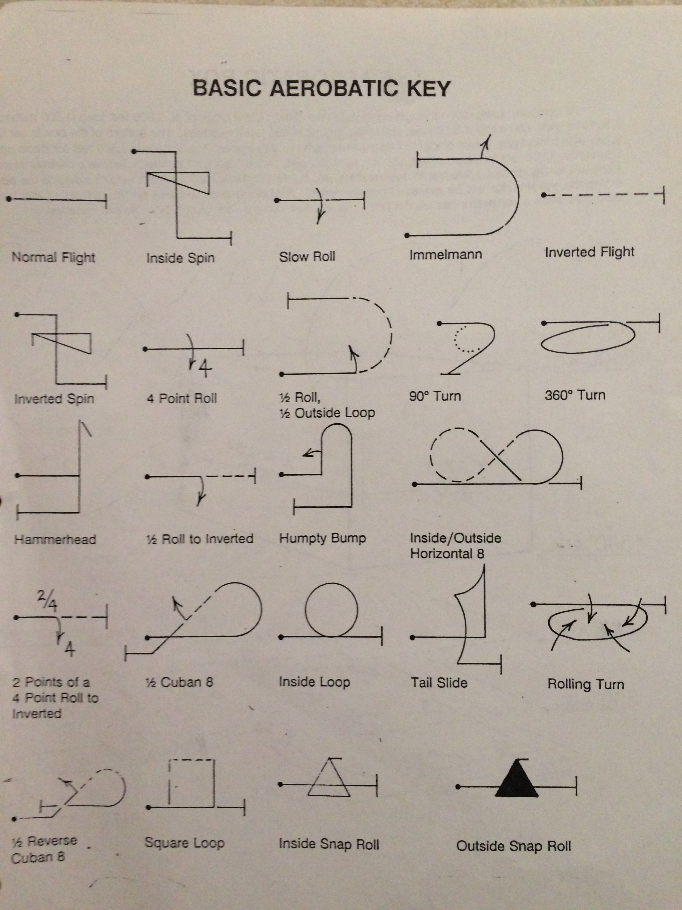
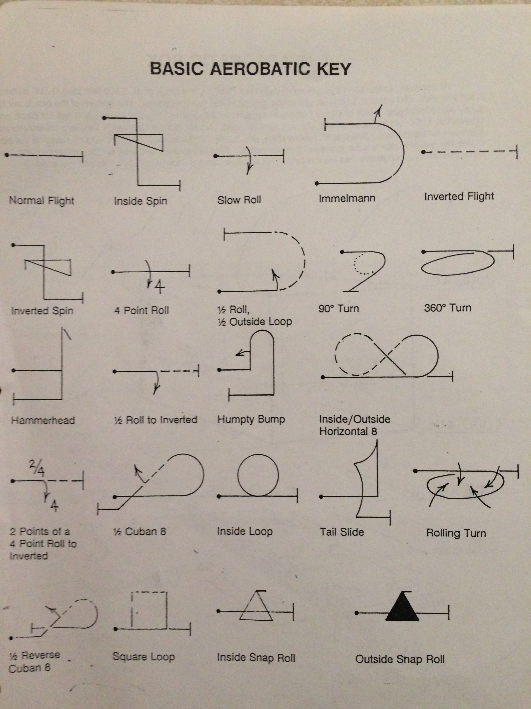

Airshows
Airshows have been around since before World War 2, when they would mostly consist of long distance races that could last many days. Today, airshows are a way for pilots to demonstrate their technical capabilities in various different aerobatic maneuvers. Many of these maneuvers created for artistical purposes at first were later used in war to gain aerial advantages.
Aerobatics
Aerobatics is the practice of flying in abnormal positions in the air. Pilots mainly fly aerobatics for entertainment or competitions. In aerobatics, there are 5 basic maneuvers: lines, loops, roles, hammerheads and spins. Pilots combine these maneuvers to perform aerobatic sequences.


Rolls
A roll, is when the plane turns around it's longitudinal axis. The pilot simply uses the control stick to use the ailerons to guide the plane to turn around it's longitudinal axis, which is also called the roll axis.


Spins
A spin occurs when one wing is stalled while the other is still producing lift. To enter a spin, a pilot must enter a turn then lower the speed of the aircraft until it stalls, then kicking the rudder to yaw the plane and then the plane will enter a spin. Here's a video of me performing a spin. In the video the beeping noise is the stall warning system that is going off, indicating that the plane is about to enter a stall, then i kick the rudder to the side leading to the nose of the plane to pitch downwards.
Sequences
Pretty much all aerobatic maneuvers are a combination of these 5 maneuvers, by combining them beautiful aerobatics can be performed. Here is a video of spins and rolls executed at an airshow. A snap roll is a combination of stalling the aircraft while rolling to turn fast. A flat spin is when the aircraft has a center of gravity that is closer to the back of the plane and is pitched upwards whilst spinning, creating a dangerous spin that can be hard to exit. In the movie Top Gun, Tom Cruise enters a flat spin and is unable to recover leading to his jet crashing.
Loops
A loop consists of pitching the nose up and basically performing a 360 degree turn and performing a loop. It is exactly like performing a turn, however the plane will be pitched upside down at the peak.


Hammerheads
A hammerhead or a stalling turn is essentially starts the same as a loop, as the pilot points the nose straight up, however the pilot will maintain his nose up until the plane loses enough speed to start stalling, then the nose will pitch down resulting in a stalling turn.

Other aerobatic maneuvers
Pilots use symbols in order to identify the maneuver sequences they use, in competition there are Aresti Catalog symbols associated to competition maneuvers. The Aresti Catalog is a document made by the aeronautics federation.

